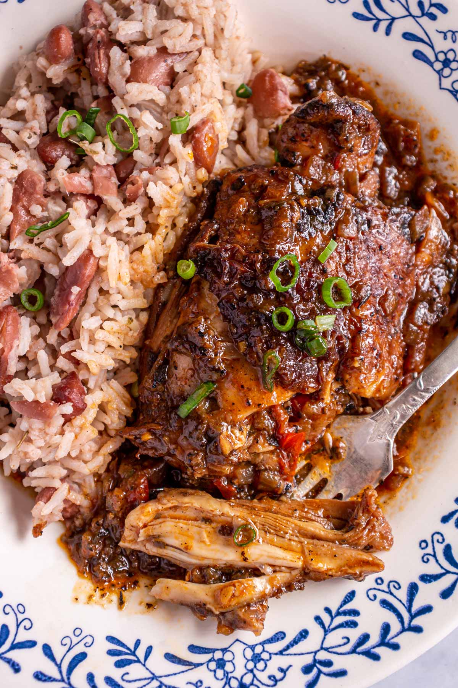

Brown Stew Chicken with Rice and Peas

Description
This dish is one of if not my favorite dish to have growing up I've always
had a thing for brown stew Chicken. Its really just chicken cut small then
stewed with various spices.
Ingredients
- Chicken
- Browning Sauce
- Brown Sugar
- Pepper
- Onion
- Garlic
- scallions
- Thyme
- Bay leaves
Steps:
- In a large bowl combine the chicken with all
the marinade ingredients
- Stir to evenly coat and massage the marinade into the chicken pieces
- Let the cobination sit for at least one hour or overnight
- Remove chicken pieces from marinade, scaping off the vegetables and herbs from the chicken. Reserve the marinade and allow the chicken to sit for 10 mins so it gets closer to room temp
- In a large pot heat oil and add chicken pieces to the oil and brown for 2 - 3 minutes on each side, or until golden brown. Remove browned pieces and set aside. Once done remove most of the oil from the pot leaving only around 2 tbps
- Add the reserved marinade and stir cook for about 1 to 2 mins then add chicken broth. Add solid peper and ketchup at this point stir until smooth then add the browned chicken and stir to coat
- When the mixture comes to a boil, cover the pot and lower the heat to maintain a gentle simmer and cook for about 45mins
Return to home page